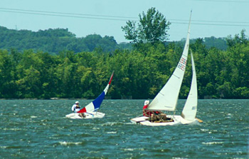
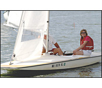
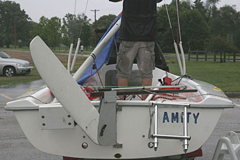

Check Us Out
Get to the lake early on race day. While the races start at 2:00, skippers will begin arriving before noon. The action starts out on the parking lot where masts are being raised and the boats are set up with sails and all their rigging. Members will welcome you, and you may be asked to help and even enlisted as crew. The Race Committee Tent is another place to find members and get information. Visit the tent before and after the races, as they get very busy during the races. Dress appropriately: shorts, light clothing and boat or water shoes. You will need sun blocker, a hat, water and sun shades.
Crew
A great way to take part is to serve as crew on a CCSA members’ boat. Again, be sure to come early. You can hook up with skippers in the parking lot or go to the Race Committee Tent and sign up on the “Crew Sheet”. It’s good if you have some sailing experience, but even if you have never sailed you will probably find someone to sail with. Many of the boats sailed at Creve Coeur Lake require two or three on board to be sailed effectively. Most skippers find it hard to get crew on a steady basis and are thankful for even inexperienced help. It is a great way to learn sailing while you try out different types of sailboats.
Bring A Boat
If you have a sailboat of your own, park your trailer in CCSA’s roped off area and get it set up to sail as early as possible. If you need help rigging your boat there are usually members around to give you a hand and answer any questions you might have. Once the Race Committee has set up their tent, be sure to go over and sign up. They can provide information on how CCSA racing is conducted and brief you on the starting sequence for the fleet you will be assigned to. You must have a life jacket on board for each person in the boat. At the discretion of the Race Committee, all participants may be required to wear their life jacket in order to participate in the races. It’s a good idea to wear your life jacket anyway and we recommend it. New skippers are welcome to sail for a few races, but you should soon Join CCSA in order to continue to participate.
If you are looking for a boat to buy, members of CCSA may be able to help. Check out the Boat Sales page on this web site and talk to members to get the word out that you are looking for a boat. Over the years our members have developed contacts and know-how for finding and fixing-up used boats. There are also plenty of opinions around if you decide to buy a new boat.
Directions To Lake/Map
How To Join CCSA
{kind=link}
{kind=link}
{kind=link}